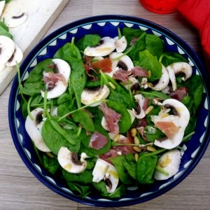
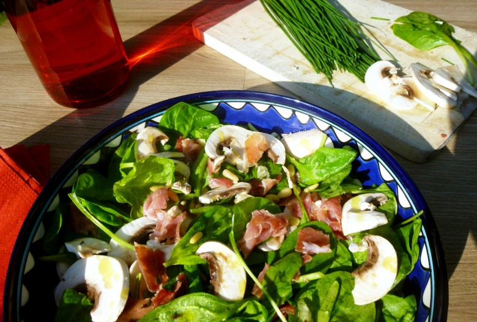

Salade épinards-champignons-jambon

Recette expresse pour celles et ceux qui n’ont pas toujours le temps!
Malgré la grisaille qui a été bien présente du côté de chez moi j’avais envie de partager avec vous cette recette que j’aime particulièrement en ce moment!
Rapide, ultra simple et pleine de saveurs! Il s’agit d’une salade aux pousses d’épinards, aux champignons de Paris, au jambon serrano et au pignons de pins! Et pour tout vous dire je vais, après avoir écris cet article me la préparer pour demain midi^^
C’est parti pour la recette !
Ingrédients
- pousses d'épinards - 100g
- Jambon serrano - 4 tranches
- champignons de paris frais - 150 g (environ 3gros)
- Pignons de pins - 25 g
- Tomates cerises - facultatif
- ail - 2 petites gousses ou 1 grosse
- moutarde de Dijon - 1 càc
- vinaigre de vin rouge - 1 càs
- huilde d'olive - 4 càs
- ciboulette - 1 càs
- sel
- poivre
Instructions
- Émincer les champignons en fines tranches et couper le jambon en petits morceaux
- Laver les pousses d'épinards et les mettre dans un saladier
- Ajouter les pignons de pins, le jambon et les champignons
- Mélanger
- Assaisonner au dernier moment car les pousses d'épinards se flétrissent très rapidement au contact de la vinaigrette
- Dans un bol, mélanger la moutarde avec le vinaigre et la (ou "les" gousses d'ail selon vos goûts)
- Émulsionner avec l'huile d'olive
- Saler, poivrer
- Avant de servir, ajouter la ciboulette à la vinaigrette et verser sur la salade
- Bien mélanger afin d'enrober tous les ingrédients

Les tips de la communauté
4 commentaires
Salade simple, délicieuse et idéale pour un soir sans trop de préparation. Parfaite pour utiliser les ingrédients du placard.
Astuces
- Idéale quand on a tous les ingrédients sous la main
- Recette rapide et satisfaisante pour le soir